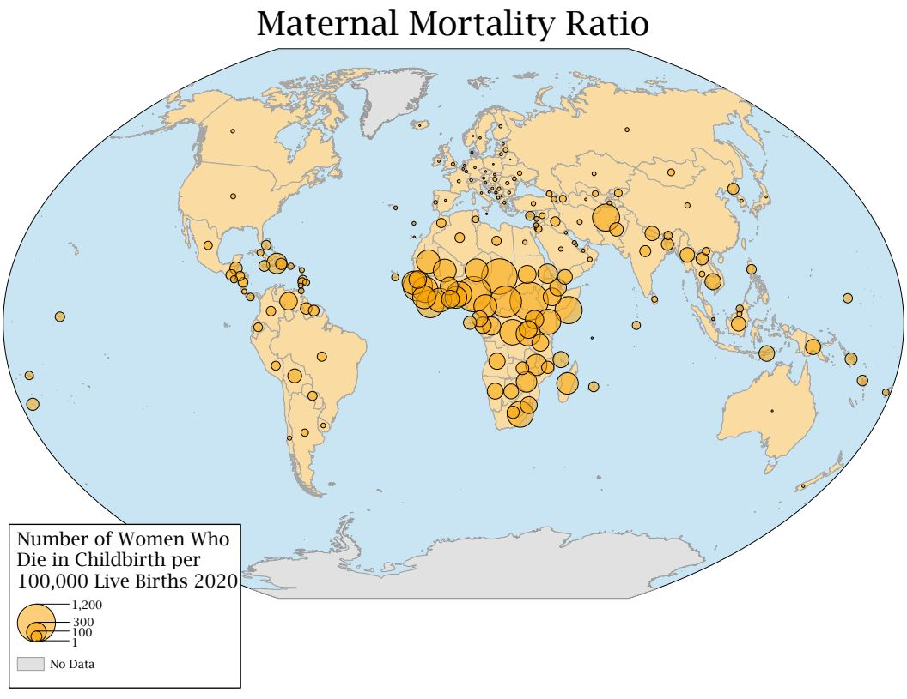
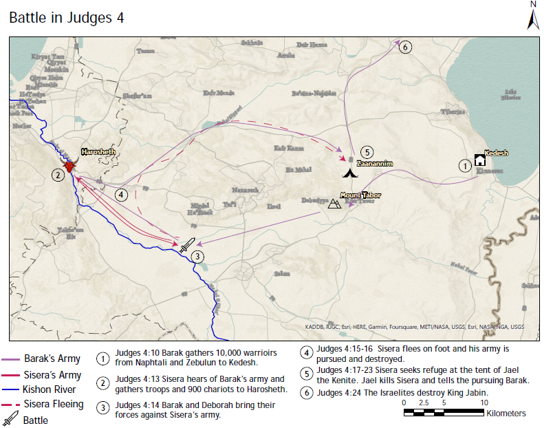
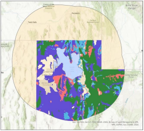

Individual Projects

Georgia Atlas Map
General reference map of the country of Georgia created using ArcGIS Pro.

Maternal Health Thematic Map Essay
Series of thematic maps surrounding issues related to childbirth.

Judges 4 Maps
A project done early in my learning of the ArcGIS software for a Bible as literature class. Depicts the central movements and characters of chapter 4 in the book of Judges.
Group Projects

Salt Lake Dust GIS Project
Modeling populations, vegetation, and snowpack areas affected by worsening toxic windblown dust from the Great Salt Lakebed
Hillshade Tool Writeup
Hillshade script tool created using python.